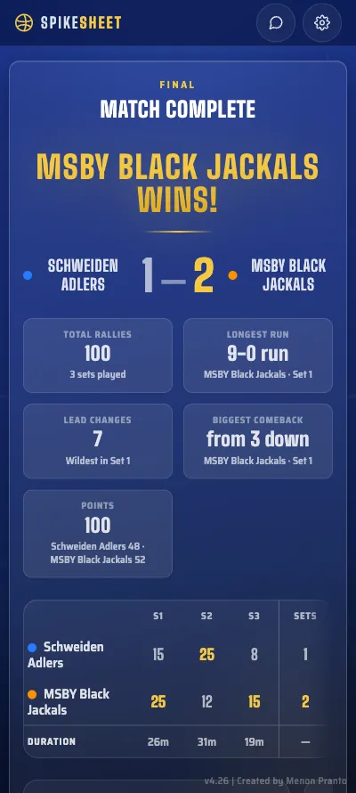

Free · Offline · No sign-up
The volleyball scoresheet
that knows the rules
Scores, rotations, substitutions, libero and timeouts — tracked and enforced under FIVB rules, in your browser. Nothing to install, and it works courtside without signal.
Live — deciding set
What it tracks
Everything the paper sheet asks for
-
Rotation, rotated for you
Six positions per side on a court diagram. Win the serve back and the whole lineup steps round on its own — clockwise, the way the rulebook says.
-
Substitutions it won't let you break
A starter and their substitute are locked into a pair for the set, and the per-set entry cap is counted for you. Illegal swaps are greyed out with the reason on screen.
-
The libero, handled properly
Libero replacements aren't substitutions, so they never burn a sub or lock a pair. The app keeps that distinction so you don't have to.
-
Works with no signal
Install it once and the whole app runs from your phone. No account, no network, nothing to fail in a sports hall basement.
-
Undo that survives a court swap
Step back through any point. Swap ends mid-set and undo still knows which side scored what.
-
A full-time graphic at the end
Set-by-set box score, a point-by-point chart, and the story of the match — longest run, biggest comeback, how often the lead changed.
How it works
Three steps to first serve
-
Set up
Name both teams, pick their colours, and type the shirt numbers. Best of three or best of five.
-
Rotate
Drop each player onto their starting position on the court diagram. From set two you can reuse the last lineup in one tap.
-
Score
Two taps a rally. Rotation, serve, timeouts, technical timeouts and side switches all follow on their own.
At full time
The match, written up for you
Set-by-set box score, a point-by-point chart of every rally, and the story of the match — longest run, biggest comeback, how often the lead changed.

What's new
Still being built
Questions
Before you start
Is it free?
Yes. No account, no payment, no ads, no trial that expires. It is a personal project, not a product with a price list.
Does it work offline?
Yes. Add it to your home screen and the app stores itself on the device — the code, the fonts, all of it. After that it opens and scores a full match with the network off.
Does it really enforce FIVB rules?
It enforces the ones that bite during a match: clockwise rotation on side-out, the starter-and-substitute pair lock, the per-set substitution cap, libero replacements kept separate from substitutions, timeouts and technical timeouts, and the side switch at eight points in a deciding set. It does not model the whole rulebook, and it will not referee the game for you.
Can I install it?
Yes — it is a web app you can install. In Chrome or Edge use the install icon in the address bar; on iPhone or iPad open the share menu and choose “Add to Home Screen”. It then launches like any other app.
Where does my match data go?
Nowhere. Matches, history, team colours and settings are stored in your own browser on your own device. There is no server to send them to, which also means clearing your browser data clears them.
Does this replace the official scoresheet?
No. Treat it as a tracker and a second pair of eyes, not certified paperwork. For a sanctioned match the official sheet is still the official sheet.